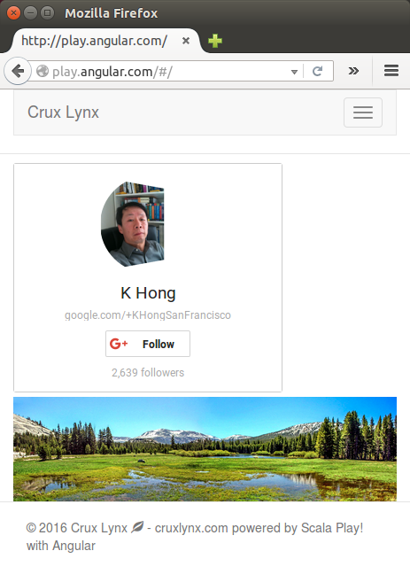
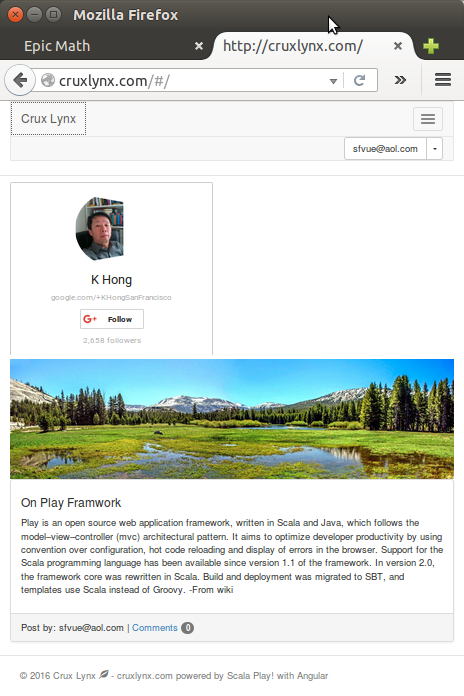

Scala Play app with Angular - 2017
In this page, we'll work on a simple blog with Scala Play as backend and Angular as frontend frameworks.
First, we are going to test it on a local Apache/Nginx with reverse proxy setup on Ubuntu 14. Then, we'll deploy it to production VPS on Ubuntu.
The domain name for local is set as play.angular.com for local, and cruxlynx.com for production.
Let's start by updating the list:
$ sudo apt-get update
Get the code from a repo:
$ git clone https://github.com/Einsteinish/Scala-Play-Framework-with-Angular.git
$ sudo apt-get install nodejs $ sudo ln -s /usr/bin/nodejs /usr/bin/node $ node -v v0.10.25
In order to upgrade node, we can use n module from npm:
$ sudo npm cache clean -f $ sudo npm install -g n $ sudo n stable $ sudo ln -sf /usr/local/n/versions/node/6.0.0/bin/node /usr/bin/node
For npm:
$ sudo apt-get install npm $ npm -v 1.3.10
We may want to upgrade npm:
$ sudo npm install -g npm $ npm -v 3.8.9
Install Java for backend:
$ sudo apt-add-repository ppa:webupd8team/java $ sudo apt-get update $ sudo apt-get install oracle-java8-installer
Install JavaScript tools:
$ sudo npm install -g grunt-cli bower $ sudo npm install -g yo
grunt is a task-based command line build tool for JavaScript projects.
Let's install local grunt.
The easiest way to add Grunt and gruntplugins to an existing package.json is with the command npm install grunt --save-dev. Not only will this install grunt locally, but it will automatically be added to the devDependencies section, using a tilde version range:
$ sudo npm install grunt --save-dev
Now, we want to install packages specified in package.json:
$ sudo npm install
Using the --save-dev flag will cause npm to automatically add this package to the dependencies in our package.json file.
Run grunt serve:
$ grunt serve ... Running "wiredep:app" (wiredep) task Warning: Error: Cannot find where you keep your Bower packages. Use --force to continue. ...
To fix the problem:
$ bower install jquery --save
Now we can run AngularJS client app run grunt serve:
$ grunt serve
Running "serve" task
Running "clean:server" (clean) task
>> 0 paths cleaned.
Running "wiredep:app" (wiredep) task
Running "wiredep:test" (wiredep) task
Running "concurrent:server" (concurrent) task
Running "copy:styles" (copy) task
Copied 1 file
Done.
...
Running "autoprefixer:server" (autoprefixer) task
Autoprefixer's process() method is deprecated and will removed in next major release. Use postcss([autoprefixer]).process() instead
File .tmp/styles/main.css created.
Running "configureProxies:server" (configureProxies) task
Proxy created for: /app to localhost:9090
Running "connect:livereload" (connect) task
Started connect web server on http://localhost:9000
Running "watch" task
Waiting...
Check the process:
$ lsof -i grunt 8395 k 10u IPv4 5356818 0t0 TCP localhost:9000 (LISTEN) grunt 8395 k 11u IPv4 5356200 0t0 TCP *:35729 (LISTEN) ...
On the Play server:
$ ./activator "run 9090"
[info] Loading project definition from /home/k/MySites/cruxlynx/Scala-Play-Framework-with-Angular/server/project
[info] Updating {file:/home/k/MySites/cruxlynx/Scala-Play-Framework-with-Angular/server/project/}server-build...
[info] Resolving org.fusesource.jansi#jansi;1.4 ...
[info] Done updating.
[info] Set current project to server (in build file:/home/k/MySites/cruxlynx/Scala-Play-Framework-with-Angular/server/)
[info] Updating {file:/home/k/MySites/cruxlynx/Scala-Play-Framework-with-Angular/server/}root...
[info] Resolving jline#jline;2.11 ...
[info] Done updating.
--- (Running the application, auto-reloading is enabled) ---
[info] play - Listening for HTTP on /0:0:0:0:0:0:0:0:9090
(Server started, use Ctrl+D to stop and go back to the console...)
[info] play - database [default] connected at jdbc:h2:mem:play
[info] play - Application started (Dev)
Check the process:
$ lsof -i java 15885 k 309u IPv6 5778371 0t0 TCP *:9090 (LISTEN)
Actually, the Play command runs this:
$ java -Dactivator.home=. -Xms1024m -Xmx1024m -XX:MetaspaceSize=64m -XX:MaxMetaspaceSize=256m -jar ./activator-launch-1.3.2.jar run 9090
Open a browser and type in http://localhost:9000:

We can set up Apache reverse proxy so that users request on port 80 and forward it to port 9000. Here is the config file (/etc/apache2/sites-available/play.angular.com.conf):
<VirtualHost *:80>
ServerAdmin webmaster@play.angular.com
ServerName www.play.angular.com
ServerAlias play.angular.com
ErrorLog /var/www/play.angular.com/logs/error.log
CustomLog /var/www/play.angular.com/logs/access.log combined
ProxyPass / http://localhost:9000/
ProxyPassReverse / http://localhost:9000/
<Location "/app">
Order deny,allow
Allow from all
</Location>
</VirtualHost>
Also we need to set the host in /etc/hosts like this:
127.0.0.1 play.angular.com
This time, we can just type in the domain name for the url:

/etc/httpd/cruxlynx.com.conf:
<VirtualHost *:80>
ServerAdmin cruxlynx@gmail.com
ServerName www.cruxlynx.com
ServerAlias cruxlynx.com
ErrorLog /var/www/cruxlynx.com/logs/error.log
CustomLog /var/www/cruxlynx.com/logs/access.log combined
ProxyPass / http://localhost:9000/
ProxyPassReverse / http://localhost:9000/
<Location "/app">
Order deny,allow
Allow from all
</Location>
</VirtualHost>
/etc/nginx/cruxlynx.com.conf:
server {
listen 80;
server_name cruxlynx.com;
location / {
proxy_pass http://localhost:9000;
proxy_http_version 1.1;
proxy_set_header Upgrade $http_upgrade;
proxy_set_header Connection 'upgrade';
proxy_set_header Host $host;
proxy_cache_bypass $http_upgrade;
}
}
In the following two sections, we'll test for production version on local.
We want to run it as a background process so that it can run after exiting from ssh.
In Production:
server$ ./activator "start -Dhttp.port=9090"
[info] Loading project definition from /home/k/MySites/cruxlynx/Scala-Play-Framework-with-Angular/server/project
[info] Updating {file:/home/k/MySites/cruxlynx/Scala-Play-Framework-with-Angular/server/project/}server-build...
[info] Resolving org.fusesource.jansi#jansi;1.4 ...
[info] Done updating.
[info] Set current project to server (in build file:/home/k/MySites/cruxlynx/Scala-Play-Framework-with-Angular/server/)
[info] Packaging /home/k/MySites/cruxlynx/Scala-Play-Framework-with-Angular/server/target/scala-2.11/server_2.11-1.0-SNAPSHOT-sources.jar ...
[info] Done packaging.
[info] Updating {file:/home/k/MySites/cruxlynx/Scala-Play-Framework-with-Angular/server/}root...
[info] Resolving jline#jline;2.11 ...
[info] Done updating.
[info] Wrote /home/k/MySites/cruxlynx/Scala-Play-Framework-with-Angular/server/target/scala-2.11/server_2.11-1.0-SNAPSHOT.pom
[info] Main Scala API documentation to /home/k/MySites/cruxlynx/Scala-Play-Framework-with-Angular/server/target/scala-2.11/api...
[info] Packaging /home/k/MySites/cruxlynx/Scala-Play-Framework-with-Angular/server/target/scala-2.11/server_2.11-1.0-SNAPSHOT.jar ...
[info] Done packaging.
[info] Packaging /home/k/MySites/cruxlynx/Scala-Play-Framework-with-Angular/server/target/server-1.0-SNAPSHOT-assets.jar ...
[info] Done packaging.
model contains 22 documentable templates
[info] Main Scala API documentation successful.
[info] Packaging /home/k/MySites/cruxlynx/Scala-Play-Framework-with-Angular/server/target/scala-2.11/server_2.11-1.0-SNAPSHOT-javadoc.jar ...
[info] Done packaging.
(Starting server. Type Ctrl+D to exit logs, the server will remain in background)
Play server process ID is 30222
[info] play - database [default] connected at jdbc:h2:mem:play
[info] play - Application started (Prod)
[info] play - Listening for HTTP on /0:0:0:0:0:0:0:0:9090
As the output suggested, we can type Ctrl+D and out of ssh. The server still running in background.
More info on port change depending on the Play version : How do I change the default port (9000) that Play uses when I execute the "run" command?
For client:
client$ nohup grunt serve &
The picture below shows the result from the run on AWS Ubuntu 14 with nginx reverse proxy setup.
server$ ./activator "start -Dhttp.port=9090" client$ nohup grunt serve & $ lsof -i COMMAND PID USER FD TYPE DEVICE SIZE/OFF NODE NAME grunt 1747 ubuntu 10u IPv4 13039 0t0 TCP localhost:9000 (LISTEN) grunt 1747 ubuntu 11u IPv6 13042 0t0 TCP *:35729 (LISTEN) java 3476 ubuntu 90u IPv6 30014 0t0 TCP *:9090 (LISTEN)

The code of this post is based on Building Modern Web Applications with AngularJS and Play Framework
I haven't figured out the reason why but the grunt keeps dying, so I have to run the following cronjob as 'root':
$ sudo crontab -e * * * * * cd /vol1/MySites/cruxlynx/Scala-Play-Framework-with-Angular/client && ./g.sh
Note: I moved the source code to /vol1 from ~. The sections in this tutorial were written before I moved the files.
The script (g.sh) looks like this:
#!/bin/bash pID=`pgrep grunt` echo "pid=$pID" if [ -z "$pID" ] #check empty then echo "Not running" nohup grunt serve >/dev/null 2>&1 & else echo "Running" fi
Ph.D. / Golden Gate Ave, San Francisco / Seoul National Univ / Carnegie Mellon / UC Berkeley / DevOps / Deep Learning / Visualization